Échange avec Dinan
Dieser Beitrag erschien ursprünglich im Spickzettel/Dezember 2022. Zur Originalausgabe
Doch der Reihe nach... – alles begann an dem schicksalhaften Tag der Abreise. Nun standen uns etwa sechzehn Stunden Busfahrt, siebzehn Filme, 27 neue Offlinegames und eine laaange Nacht bevor – mit nur einer einzigen Steckdose für den gesamten Bus. Glücklicherweise saß ich neben ihr :).
Der erste Tag bestand aus den üblichen Gepflogenheiten, also dem Kennenlernen der Austauschfamilie, einem traditionellen französischen Frühstück und einer Besichtigung der Schule. Zudem erkundeten wir die „Abtei von Léhon“ und deren Umgebung, außerdem erhielten wir einen Ausblick auf die kommenden Tage.
Im Norden der Bretagne, angrenzend an den Ärmelkanal, findet man Saint-Malo, einen „der bedeutendsten Häfen an der bretonischen Nordküste“, doch die Stadt ist viel mehr. Der Ort liegt auf einer Halbinsel und hat eine erstaunliche Vergangenheit. Früher einmal war es DER Hingucker für Korsaren, Piraten und Freibeuter. Wir starteten mit einer kleinen Rallye, die die Entstehung und Historie der Stadt, von Mönchen zu Piraten und zum Bau der mächtigen Wehrmauer, behandelte. Danach hatten wir erstmal die Möglichkeit, etwas am Strand zu essen, was jedoch durch räuberische Möwen vorzeitig beendet wurde. Mit einem Sandburgenwettbewerb und einem total durchgeknallten bretonischen Tanz vollendeten wir schließlich den Tag.
Das Wochenende verbrachten wir teils in den Gastfamilien, teils mit Freunden am Meer und auf Oktoberfesten. Das Meer, der Strand und diese scheinbar unendliche Weite waren selbstverständlich überwältigend, doch zugleich hatte es diese Ruhe, diese Stille und diese Einfachheit.
Nun zu einem der Highlights des Austauschs – dem Besuch von Mont-Saint-Michel. Diese Stadt ist nicht nur aufgrund ihrer faszinierenden Vorgeschichte etwas Außergewöhnliches, nein, die Stadt ist tatsächlich mitten im Meer positioniert. Bei vorherrschender Ebbe ist es buchstäblich möglich, die von Menschen gebaute Insel per Fuß zu erreichen.
Doch langsam und ganz von Anfang an: Mont-Saint-Michel ist gleichzeitig eine Insel, ein Berg und eine Stadt, und beherbergt außerdem eine der bedeutendsten Abteien der Bretagne. Allein der Bau dieser Abtei hat über 500 Jahre gedauert und wurde auch während des Hundertjährigen Krieges nicht unterbrochen. Zudem ist sie für ihre hervorragende Möglichkeit zum Wattwandern bekannt, was wir auch gleich ausprobiert haben. Zugegeben – wir wären fast von der Flut geholt worden, aber es hat Spaß gemacht. Anschließend kauften wir noch überteuerte französische Schokolade und selbstverständlich jede Menge Souvenirs.
Nun, was wäre ein Französisch-Austausch ohne ein paar Stunden Französisch-Unterricht – und genau darum ging es am fünften Tag. Wir begannen ihn wie 27 fast normale französische Schüler. Dazu muss man sagen, der Unterricht unseres Nachbarlandes unterscheidet sich schon in einigen Punkten von dem bei uns. Könntet ihr euch beispielweise vorstellen, jeden Tag bis vier Uhr Unterricht zu haben? Grund dafür: jede Stunde dauert 55 Minuten. Zu unserem Glück hatten wir derer nur zwei und wurden dann auch schon wieder entlassen. Zu einem typischen Schultag im Collège „François Broussais” gehört auch, dass man zwischendurch zweieinhalb Stunden Pause hat! Hört sich erstmal supi an, aber wir hatten halt auch einfach mal keine Ahnung, was wir da tun sollten. Schließlich konnte man in dieser Zeit einzig und allein auf den zentralen Hof gehen. Man kann sich nun gut vorstellen, was wir dort getan haben – wir waren am Handy. Ich meine, wir sind Austauschschüler, wir dürfen (fast) alles. (:
In den nächsten zwei Tagen vollendeten wir jeweils in Vierergruppen unsere Projektarbeiten, was unsere Kommunikation und Bindung deutlich stärkte. Bei den meisten jedenfalls. Nachmittags hatten wir noch einmal ein paar Stunden französische Geschichte, nahmen uns die Vorwelt Dinans im Detail vor, und besaßen später ein letztes Mal die Möglichkeit, uns frei durch die Stadt zu bewegen. Natürlich standen die Crêpes an oberster Stelle. Kleiner Tipp: die ABSOLUT BESTEN CRÊPES DER GESAMTEN BRETAGNE gibt es in der kleinen Boutique „Boulangerie-Patisserie Hebert“, welche absolut die bezauberndsten und einzigartigsten ihrer Art macht. Schließlich präsentierten wir unsere Arbeiten noch und gaben dem ersten Teil des Programms einen passenden Abschluss.
Ein letztes gemeinsames Auf den Bus Warten, ein letztes gemeinsames Abendessen und ein letztes gemeinsames Netflixen [in Frankreich]. Das klingt so abschiedlich, soll es aber gar nicht, da wir uns ja Anfang Dezember wiedersehen. Gegen Neun verabschiedeten wir uns dann alle, stiegen in den Bus, und haben nochmals kräftig gewunken und geheult.
Jeremias Ruff, in: Spickzettel
2022/12
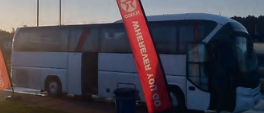
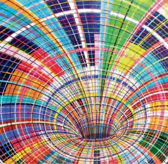
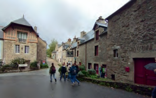
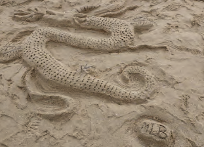
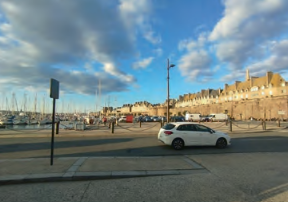
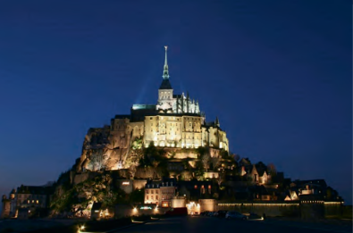
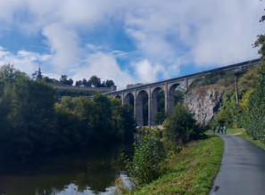
 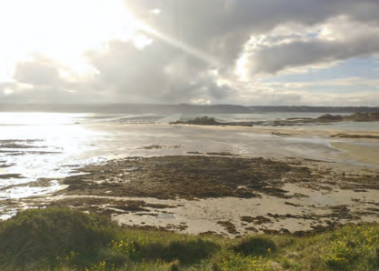
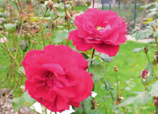
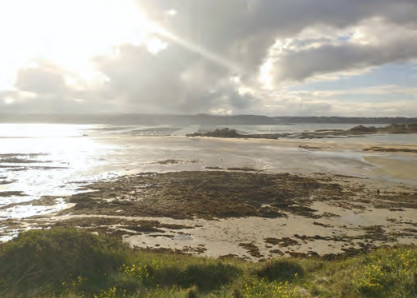
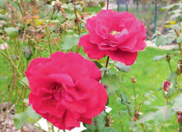
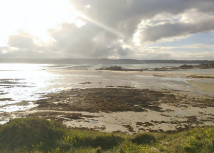
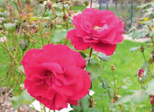